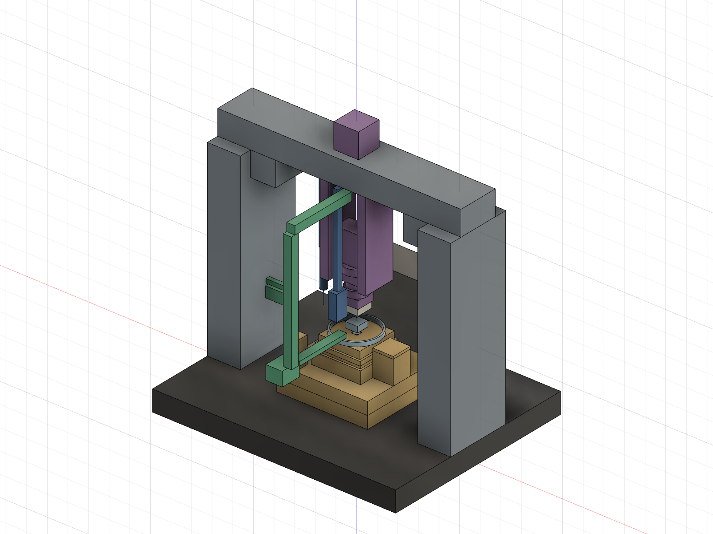
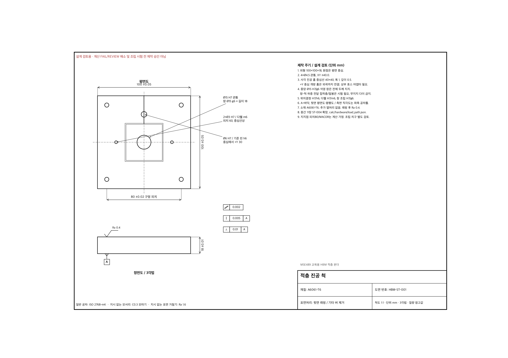
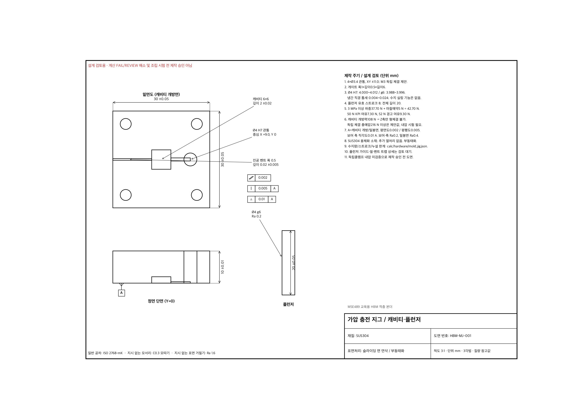
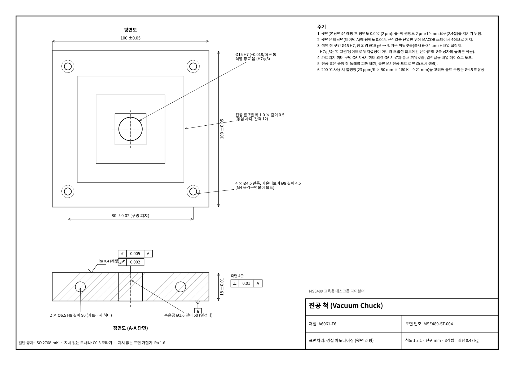
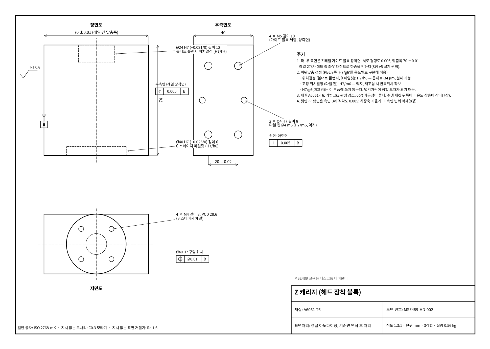
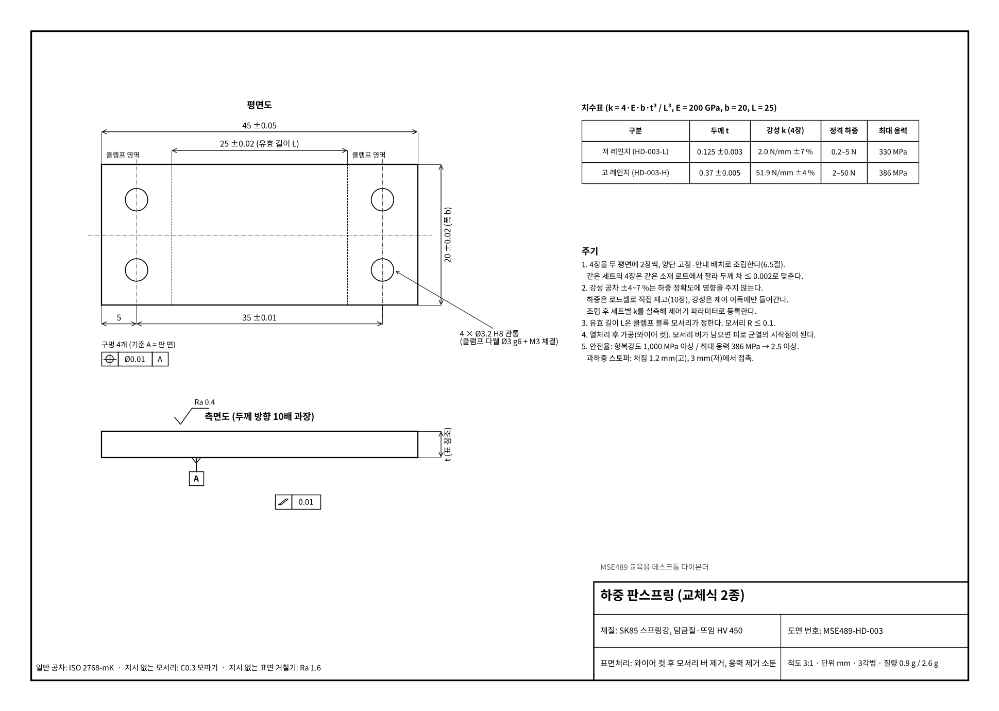
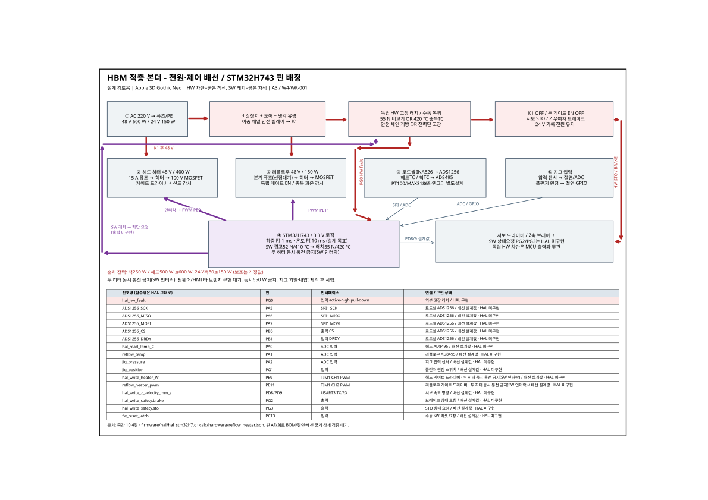

적층 척
층마다 쌓이는 다이의 하중을 지지하고 진공으로 고정하기 위해.
MSE489 · CAD EXPLORER
형상과 도면, 그리고 설계 근거를 함께 살펴봅니다.
마우스 드래그로 회전 · 휠/핀치로 확대 · 부품을 클릭하면 상세 정보가 열립니다. 목록 버튼으로도 선택할 수 있습니다.
3D 모델 초기화 중…
분해 방향·이동 거리와 카메라 배율은 이해를 돕는 표시 설정입니다. 실제 치수·구동 행정·조립 순서를 나타내지 않습니다.
GLB는 개별 부품을 묶은 10개 그룹입니다. 재질·치수는 형상에서 측정하지 않고 spec_stacker.py → PART_SOURCES의 원본 값을 표시합니다.

프레임·고정 헤드·이동 기판·조동/미동 정렬·듀얼 비전을 계승합니다.

적층·리플로우·충전 기능을 구성합니다. 두 척과 지그는 교환 장착 설명용 대기 위치입니다.
아래 5종은 기말에 추가·고도화한 기능입니다. 적층 척·디스펜서·트레이의 중간 형상을 재사용하므로 5종 모두가 신규 바디라는 뜻은 아닙니다.
층마다 쌓이는 다이의 하중을 지지하고 진공으로 고정하기 위해.
MR-MUF에서 완성 스택 전체를 가열하고 단열·강제 냉각하기 위해.
독립 체결한 금형에 수지를 가압 이송하고 벤트로 배출하기 위해.
MR-MUF 충전 전에 액상 수지를 공급하기 위해.
필름을 부착한 다이를 뒤집힌 공급 상태로 준비하기 위해.
근거: 보고서 3.2·3.3절 · 11.1~11.3절 · summary.json parts
이미지를 누르면 원본을 엽니다. 기말 도면은 A3 · 3각법 · ISO 2768-mK입니다. 치수·공차 단위는 mm, 조도 Ra는 μm입니다.

진공 고정면·석영 창·체결공을 보는 도면입니다.
100 × 100 × 18, 윗면 평면도 0.002, 창 Ø15 H7/g6; 위치 기준 H7/h6·다웰 H7/m6를 구분합니다.
PDF 열기
히터 플레이트와 온도 센서공의 배치를 보는 도면입니다.
40 × 40 × 8, 평면도 0.002·평행도 0.005 A, Ø4.5 볼트 여유공; 상부 Ra 0.4입니다.
PDF 열기
캐비티·게이트·벤트와 플런저 단면을 보는 도면입니다.
30 × 30 × 10, 벤트 깊이 0.02 ±0.005, Ø4 H7/g6; 보어/축 Ra 0.2입니다. 끼워맞춤은 수지 씰이 아닙니다.
PDF 열기
기말 적층 척이 계승한 진공 지지면과 관찰 창 구조입니다.
윗면 평면도·윗면/바닥면 평행도와 열팽창 여유를 둔 볼트 여유공이 핵심입니다.

헤드 하중을 전달하는 캐리지와 체결 위치를 보는 도면입니다.
레일 장착 좌우 측면의 평행도·상하면 직각도·θ 파일럿 위치도가 핵심입니다.

헤드의 하중 제어용 탄성 요소 형상을 보는 도면입니다.
두께 공차·유효 길이·와이어 컷 후 버 제거가 핵심이며, 조립 후 세트별 강성을 실측합니다.

전원·안전 릴레이·독립 비교기·MCU와 두 히터의 연결을 보는 설계도입니다.
두 히터 동시 통전 금지(SW 인터락). PG0 외 핀은 배선 설계값이며 HAL 미구현입니다.
pinmap.csv 다운로드설명·공차 근거: 보고서 11.4·11.5절, 중간 보고서 11.3·11.4절 및 도면 원본 · spec_stacker.py CHUCK / REFLOW / MOLD / TOL. 고온 평면도·기밀·나사와 유리 내압·배선 굵기는 제작 후 확인합니다.
형상 원본을 Fusion에서 생성한 뒤 그룹별 STL을 웹 표시용 GLB로 변환합니다. GLB 그룹명은 STL 파일명과 같습니다.
STEP은 Git LFS 파일이므로 GitHub 파일 화면에서 다운로드하세요. Pages 직접 다운로드는 지원하지 않을 수 있습니다.
summary.json을 읽는 중…
간섭 0은 저장 자세에서의 형상 검사 결과입니다. 전체 스트로크·배관·케이블·볼트 접근성은 별도 검토 대상입니다. 높이·질량에는 원문 판정 기준이 없습니다.
제작 검토: 리플로우 척의 냉각 설계 목표는 FAIL/REVIEW입니다. 금형 기밀·예압·유리/나사 내압은 제작 후 시험으로 남아 있습니다. 현재 형상은 제작 승인본이 아닙니다.
출처: summary.json model_state / design_review · calc/hardware/reflow_heater.json verdict.remaining_FAIL_REVIEW · calc/hardware/mold_jig.json verdict.post_fabrication_tests · 하드웨어 계산·남은 검토 · 치수 원본